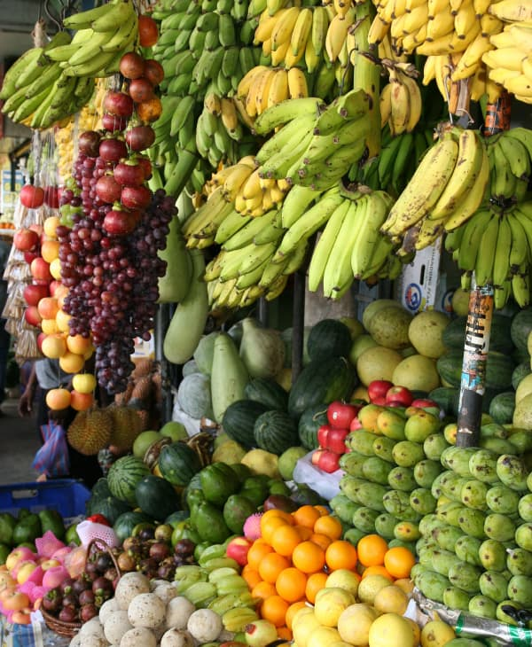
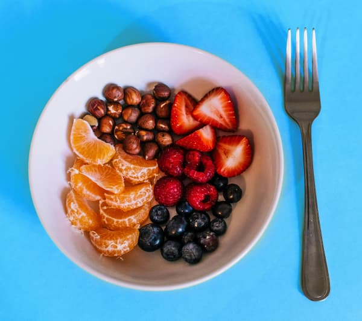

Frutas
Órgãos maduros que se desenvolvem a partir do ovário das flores.Surpreendentemente, o pepino é considerado uma fruta de acordo com a classificação botânica, pois se desenvolve a partir da flor e contém sementes. Em contraste, o morango, comumente percebido como uma fruta, é tecnicamente classificado como um "falso fruto". Sua parte suculenta é, na verdade, um receptáculo inchado da planta, enquanto as pequenas sementes na superfície são as verdadeiras frutas, conhecidas como aquênios. Assim, na complexidade da botânica, o pepino se destaca como uma fruta, enquanto o morango revela sua peculiaridade ao ser classificado de forma diferente do que muitos podem presumir.
As maçãs podem ocorrer em uma variedade de cores além do tradicional vermelho e verde, incluindo amarelo, rosa e até mesmo roxo. Cada cor pode indicar diferentes variedades e perfis de sabor.
Frutas como maçãs e peras geralmente levam de 3 a 6 meses para amadurecer após a florada. Já frutas tropicais, como mangas e abacaxis, podem levar de 3 a 5 meses, enquanto bananas podem amadurecer em 3 a 6 meses. Cítricos, como laranjas e limões, têm um período de crescimento de cerca de 6 a 12 meses, variando conforme a variedade. Frutas de clima mais quente, como melões e melancias, podem amadurecer em 2 a 4 meses.
Frutas, verdadeiros tesouros da natureza, destacam-se como opções de baixo teor calórico, proporcionando não apenas sabor irresistível, mas também benefícios nutricionais essenciais. Em média, fornecem aproximadamente 30 a 70 calorias por 100 gramas, variando conforme a variedade específica.
“Abacaxis podem parecer espinhosos por fora, mas são doces por dentro.”
- Categoria: Frutas
- Surgiu: 8.000 anos
- Cultivo: 2 - 12 meses
- Média calórica: 53 kcal
- Preço médio: R$ 12,70 Kg
Escolha um local ensolarado, preparando o solo com os nutrientes adequados para promover o crescimento saudável das suas árvores frutíferas. Selecionar variedades adaptadas ao clima local é essencial para garantir uma colheita frutífera. Ao plantar suas frutas, siga as orientações específicas para cada variedade, respeitando as profundidades e espaçamentos recomendados. Mantenha o solo consistentemente úmido, ajustando a rega conforme as necessidades de cada árvore frutífera.